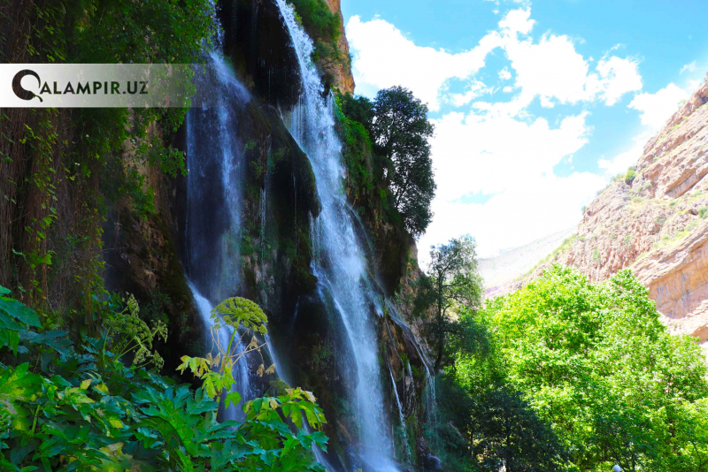
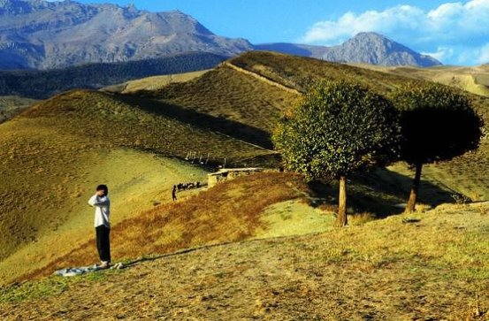

| Place name | Picture | Description |
|---|---|---|
| Sangardak |  |
Sangardak waterfall One of the pearls of Uzbekistan is considered the incredible beauty of the Sangardak waterfall. The waterfall is located 50 km to the west of Denau. It is a small town, the district center in Surkhandarya region in a picturesque gorge. Unlike many other waterfalls, in Sangardak the water doesn’t falls as one stream, it has number of individual jets. The water here flows out under the pressure of karst waters from numerous holes in the high rock. The rocks at the waterfall are covered with emerald moss and grass all year round .The smallest splashes of the waterfall sparkle in the sun and form incredible rainbows. It is a fantastically fascinating sight. |
| Boysun mountains |  | Boysun sits within the Boysuntau Mountains (foothills of the Hissars), in range of several hikes and excursions, including an overnight trek to the Teshiktosh Cave (Machay Cave), believed to have been inhabited by Neanderthals more than 50,000 years ago. |